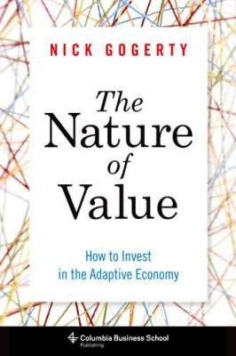

尼克·戈格蒂（Nick Gogerty）是一位价值研究与资产配置咨询师，曾担任伦敦某自营外汇交易台的量化开发人员和交易员，也曾就风险问题为大型机构和政府提供顾问服务。他的从业经历使他长期处于金融实务与学术研究的交叉地带，并逐渐形成了一个根本性的不满：传统金融理论对"价值"的解释过于静态，无法捕捉真实经济中价值创造的动态本质。《价值的本质》于2014年由哥伦比亚商学院出版社出版，是他将生物学、人类学、物理学与经济学相融合，尝试从第一性原理重新定义经济价值的系统性成果。
本书的核心论点是：经济体系与生态系统在结构上高度相似，两者都是复杂的适应性网络，都通过竞争、变异与选择推动演化。公司如同生命体，需要在特定的"经济生态位"（economic niche）中竞争资源，成功的企业是那些能够持续适应环境变化、建立有效防御机制的物种。传统的静态均衡模型——包括有效市场假说——在这一框架下显得严重失真，因为它们预设了一个不存在于现实中的稳定环境。戈格蒂借助演化生物学的概念——包括适应度景观（fitness landscape）、生态位专门化（niche specialization）和共同演化（co-evolution）——为投资者提供了一套评估企业长期生存能力的新视角。
在实践层面，书中对"护城河"（moat）的分析超越了通常仅限于列举几种竞争优势类型的浅层讨论，深入探讨了护城河的动态演变：为什么某些护城河会随时间侵蚀，为什么另一些会随网络效应的积累而自我强化，以及投资者应如何识别企业正处于哪一阶段的适应性演化周期。书中对创新如何在经济体中创造和传递价值的分析，也为理解科技行业的颠覆性变革提供了有别于传统竞争分析的框架。
哥伦比亚商学院教授保罗·约翰逊为本书的多学科方法给予高度评价；价值投资者盖伊·斯皮尔（Guy Spier）称戈格蒂"对经济价值形成了非凡的理解"，并将本书列为"任何有深度思考力的投资者的必读书目"（"a must-read for any thoughtful investor"）。对于希望突破传统估值框架、从更宏观的演化视角理解价值创造与毁灭的投资者而言，《价值的本质》是一本思维密度相当高的读物，需要读者具备一定的跨学科知识储备，但其提供的思考工具具有持久的独特价值。